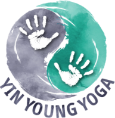
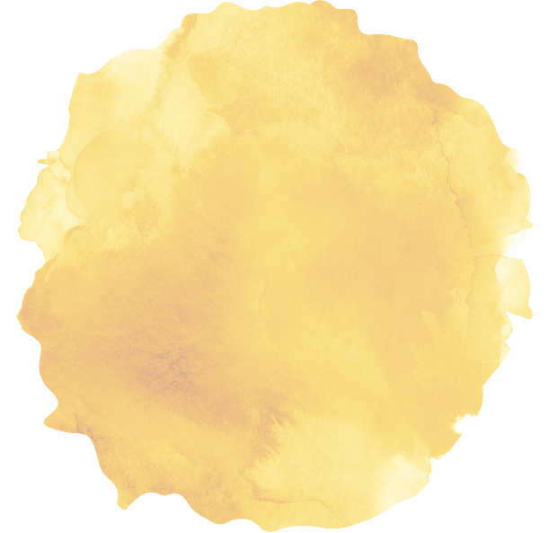

YIN YOUNG YOU - Das individuelle Präventionsprogramm für dein Kind
Angebot für ein individuell an die Bedürfnisse deines Kindes angepasstes Kursprogramm
More Colours, More You
Hier entsteht unser innovatives Angebot für ein individuell an die Bedürfnisse deines Kindes angepasstes Präventionsprogramm. Mit dem Ziel, deinem Kind mit viel Spaß dabei zu helfen, den Weg in eine gesunde und glückliche Zukunft zu gehen und sowohl alltägliche als auch schwierige Aufgaben selbst meistern zu können. Und das Ganze auf wissenschaftlich basierter Basis.
Trage hier deine E-Mail-Adresse ein - wir informieren dich gerne, sobald wir starten können:
Psychologische Methoden für ein langfristiges psychisches Wohlbefinden
Was braucht ein Kind für ein langfristiges psychisches Wohlbefinden?
Wir nehmen jedes Kind und jede*n Jugendliche*n in den eigenen Bedürfnissen und Interessen wahr und entwickeln daraus individuell angepasste und gesundheitsfördernde Kursprogramme. Diese bestehen aus wissenschaftlich belegten Methoden die Spaß machen und durch Psychologinnen konzipiert wurden. Dabei nutzen wir Inhalte aus dem Kinderyoga, der Kunsttherapie, Theaterpädagogik und vielen mehr…

Konzept von YIN YOUNG YOU
Wissenschaftlich Basiert
YIN YOUNG & YOU besteht aus einer Kombination von wissenschaftlich belegten Therapieformen, bei denen die Wirksamkeit zu spezifischen Problematiken vielfältig bewiesen wurde. Beispielsweise konnte gezeigt werden, dass Methoden der Musiktherapie unterstützend bei Einschlafproblematiken wirken können (Wang, Sun & Zang, 2014). Die Basis der Kurse bilden spielerische und hilfreiche Übungen, welche bei den individuellen Bedürfnissen ansetzt und zugeschnitten auf den individuellen Lebensalltag des Kindes ist: mit dessen Problemen, Freuden und Interessen. Wir, Susanne und Stella, haben mithilfe unserer Erfahrungen aus dem Psychologiestudium, dem praktischen Wissen aus der Arbeit mit Kindern und Jugendlichen und unseren bisherigen Forschungsarbeiten ein einzigartiges Modell entwickelt, die Methoden verschiedener Therapieformen kombiniert, sinnvoll und kindgerecht zu nutzen. Damit wird das große Ziel verfolgt, die Kenntnisse aus der Wissenschaft anzuwenden, um dein Kind in der Gesundheit präventiv zu fördern und ihr/ihm einen Werkzeugkoffer für eine nachhaltige glückliche Zukunft zu geben.
Prävention
Prävention und warum es für alle wichtig ist.
Prävention = “Oberbegriff für zielgerichtete Maßnahmen und Aktivitäten, um Krankheiten oder gesundheitliche Schädigungen zu vermeiden, [oder] das Risiko der Erkrankung zu verringern” (Bundesministerium für Gesundheit, 2021). Prävention ist also für die Gesundheit aller Menschen wichtig. Und je früher man damit beginnt, desto wirkungsvoller. Unser Fokus liegt daher auf Kindern und Jugendlichen. Viele Kinder haben das Glück, gesund und ohne Sorgen aufwachsen zu können. Es gibt aber auch Kinder und Jugendliche die neben alterstypischen Schwierigkeiten zusätzlich noch andere Sorgen als ständige Begleiter haben. Durch Mehrfachbelastungen sind diese einem besonders hohen Risiko ausgesetzt, psychisch zu erkranken. Welche Mehrfachbelastungen sind gemeint? Schambesetzte Themen wie die eigene Sexualität, ein für sie empfundenes “unnormales” Familienleben, Rassismus- oder Mobbingerfahrungen, … möchten wir durch unsere Präventions-App erreichen. Ohne Angst vor Bewertung, flexibel von Zuhause, wann immer sie wollen, erhalten sie durch YIN YOUNG & YOU eine helfende Hand. Denn jedes Kinderherz hat es verdient glücklich zu sein und zu verstehen: Ich bin gut so wie ich bin! Wie sollte diese Hilfe aussehen? Örtlich und zeitlich flexibel, anonym und ohne Hemmungen: Die YIN YOUNG & YOU App.
Yin Young and You App
Die YIN YOUNG & YOU App. Eine helfende Hand, jederzeit und überall.
Die YIN YOUNG & YOU App für ein nachhaltiges psychisches Wohlbefinden für Kinder und Jugendliche. Als Psychologinnen legen wir einen großen Wert auf Wirksamkeit. Deshalb besteht unsere App aus zwei Elementen, um dein Kind bestmöglich zu unterstützen.
1. Anamnese
Welche Bedürfnisse und Interessen hat dein Kind?
2. Präventionsprogramm
Verschiedene Module, individuell angepasst auf dein Kind.
Für Wen ist die Yin Young & you App

Kinder und Jugendliche, ohne erhöhtes Risiko psychisch zu erkranken
Zur allgemeinen Prävention des psychischen Wohlbefindens und Stärkung des glücklichen Selbst
Kinder und Jugendliche mit erhöhtem Risiko psychisch zu erkranken (z.B. Kinder psychisch belasteter Eltern)
Zur Prävention des psychischen Wohlbefindens mit an die speziellen Lebenswelten der Kinder und Jugendlichen angepassten Inhalte
Umfrage
Deine Meinung ist uns wichtig - Welchen Fokus wünschst du dir für dein Kind?
Unser Team
Ein Team mit Herz, Verstand und einem gemeinsamen Ziel:
Die Gesundheit von Kindern und Jugendlichen nachhaltig fördern!
Susanne
Gründerin M.Sc. Psychologin
Stella
Gründerin M.Sc. (cand.) Psychologin
Philip
UX Designer
Sponsoren
Yin Young & You wird gefördert durch:
Du möchtest auf dem Laufenden bleiben?
Trage hier deine E-Mail-Adresse ein - wir informieren dich gerne, sobald wir starten können:


 1. Anamnese
1. Anamnese 2. Präventionsprogramm
2. Präventionsprogramm